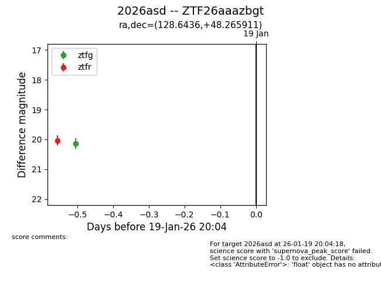
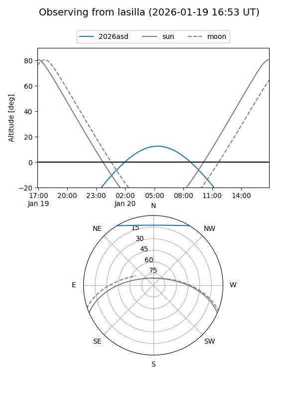
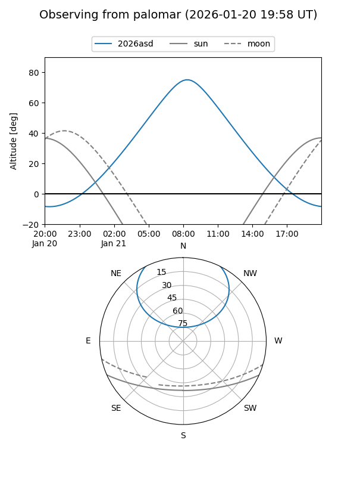
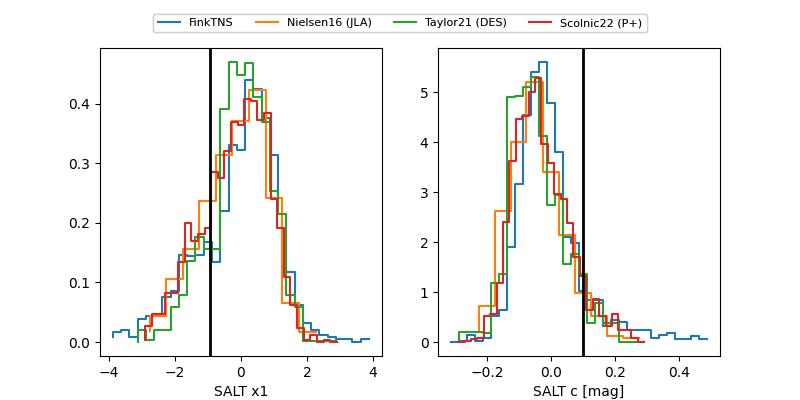

2026asd
Target 2026asd at 2026-01-19 20:06
Aliases and brokers:
FINK: link
Lasair: link
ALeRCE: link
TNS: link
YSE: link
alt names
ZTF26aaazbgt (ztf,fink_ztf)
2026asd (tns,yse)
Coordinates:
equatorial (ra, dec) = 128.6436,+48.26591
equatorial (HMS+DMS) = 08:34:34.47,+48:15:57.28
galactic (l, b) = (171.3350,+36.72507)
Flags:
Photometry:
last ztfg=20.14, ztfr=20.04
1 ztfg, 1 ztfr detections
Lightcurve

Visibility


Additional plots
